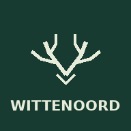

Mijn veldbezoek
Je bent niet aangemeld.
Alleen gecontroleerde, beschikbare hoogzitten zijn te kiezen.
Wie is er in het veld?
Aanwezigheid en bezetting worden gedeeld tussen de drie jagers. Laatste synchronisatie staat hieronder.
Aanmeldingen worden regelmatig ververst. Bij slechte verbinding kunnen gegevens verouderd zijn; controleer onderling.
Snelle acties
Veldkaart
Echte satellietbeelden van de omgeving. De precieze jachtveldgrens is nog niet ingetekend; deze moet zowel het terrein noordelijk als zuidelijk van de N224 omvatten.
GPS nog niet actief. Meld je aan om je positie te tonen.
Nog geen locatie gekozen.
Nieuwe waarneming
Nog geen profielen? Maak hieronder direct een nieuw profiel.
Koppelen is bedoeld voor één herkenbaar dier. Bij twijfel kun je de waarneming beter los bewaren.
Nog niet gekozen
Gebruik Maak foto voor de camera achterop je iPhone. Kies uit bibliotheek voor bestaande foto’s. Maximaal zes foto’s per waarneming; opslag blijft lokaal.
Eerdere waarnemingen
Gezamenlijke hoogzitten
Nieuwe hoogzitten worden in Supabase opgeslagen en zijn zichtbaar voor Dave, Michiel en Ries. Een hoogzit is pas selecteerbaar na controle. Aan- en afmeldingen worden gedeeld en regelmatig vernieuwd.
Nog geen locatie gekozen
Kies de exacte plek op de kaart, of gebruik je actuele GPS-positie als je bij de hoogzit staat.
Overzicht
Individuele reeprofielen
Open een profiel om alle gekoppelde waarnemingen, locaties en foto’s terug te zien.
Alle waarnemingen
Tik op een waarneming om alle geregistreerde details, foto’s en de kaartlocatie te bekijken.
Gegevensbeheer
De gegevens blijven alleen in deze browser op dit apparaat. Foto's nemen opslagruimte in.